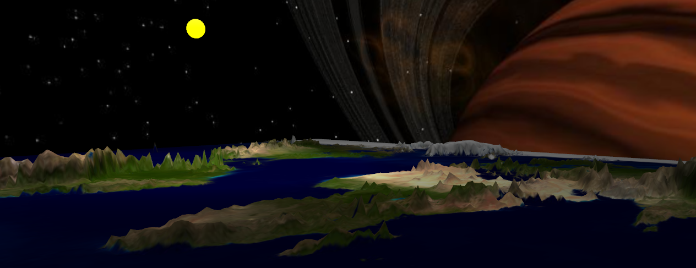
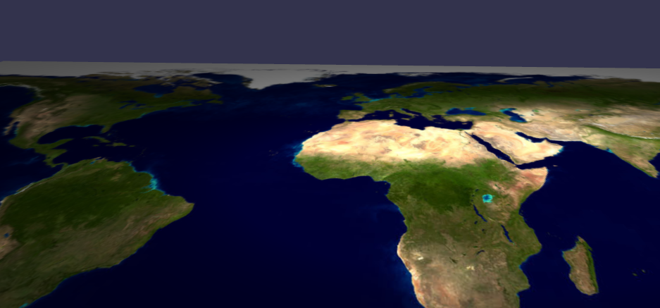

高度_图
简介
在这篇教程中，我们的目标是理解高度图，并且学习怎样建立逼真的地面。

最终效果
怎么做 ?
- 简介
使用Babylonjs生成那些山脉是非常容易的，并且只需要一个单独的函数。但是在我们做那个之前，我们必须建立一个新的材质，就像我们前面做过很多次一样：
var groundMaterial = new BABYLON.StandardMaterial("ground", scene);
groundMaterial.diffuseTexture = new BABYLON.Texture("Earth__land.jpg", scene);
var groundPlane = BABYLON.Mesh.CreatePlane("groundPlane", 200.0, scene);
groundPlane.material = groundMaterial;

我们应用在这个平面上的材质和纹理
- 一张高度图的解释
这篇教程的主要目标是理解高度图。高度图是一张简单的灰度图就像我们将使用的这张：

这张图将用来形成我们的地面，使用这张图片上灰度的变化。这张图片是你的地面的海拔数据。每个像素的颜色被理解为距离的变化或者你的网格距“底面”的“高度”。这样，这个像素越白，你的山峰越高。
为了帮助你形成这些灰度级别高度图，你可以使用一些软件比如 “Terragen” 或者 ”Picogen”.
- Javascript代码
现在让我们看一看这个强大的函数叫做 “CreateGroundFromHeightMap”:
var ground = BABYLON.Mesh.CreateGroundFromHeightMap("ground", "worldHeightMap.jpg", 200, 200, 250, 0, 10, scene, false, successCallback);
这里有很多参数:
- 名称
- 高度图片的url
- 网格尺寸: （水平面上的）
-
宽度
-
高度
- 细分度: 提高网格的复杂度来改进视觉效果:

- 最低高度 : 网格的最低水平
- 最高高度 : 网格的最高水平面
- 场景: 现行的场景
- 是否可修改: 指明这个网格未来是否可以动态修改 (布尔值)
- 成功回调函数 : 将在高度图和顶点数据建立完成后被调用.它是一个以网格作为第一个参数的函数。
最后，在我们的新网格就绪之后，我们只需要简单的应用我们的材质:
ground.material = groundMaterial;
于是现在我们有了一个美丽的3D地球场景!

在我的例子里，我添加了一个天空盒（像我们曾经在这里学习过的一样),还有一个锥形光源来生动的模拟太阳
这是另一个例子展示了你可以通过Babylonjs高度图达到什么样的效果:

- 提示
当使用者操纵相机时，如果他能看到地下则会使场景显得很令人尴尬，或者如果他缩放到了天空盒之外。所以，为了避免这一类情况，我们可以约束相机的移动：
var camerasBorderFunction = function () {
//Angle
if (camera.beta < 0.1)
camera.beta = 0.1;
else if (camera.beta > (Math.PI / 2) * 0.9)
camera.beta = (Math.PI / 2) * 0.9;
//Zoom
if (camera.radius > 150)
camera.radius = 150;
if (camera.radius < 30)
camera.radius = 30;
};
scene.registerBeforeRender(camerasBorderFunction);
你可能有兴趣访问 playground 示例伴随着这个教程.
下一步
干得漂亮！你的场景现在看起来很好了，并且你可以想象很多新的地形！一个你需要知道的更重要的事是怎样建立阴影. 阴影将赋予你的场景一个美丽的渲染效果，所以不要忘了他们!